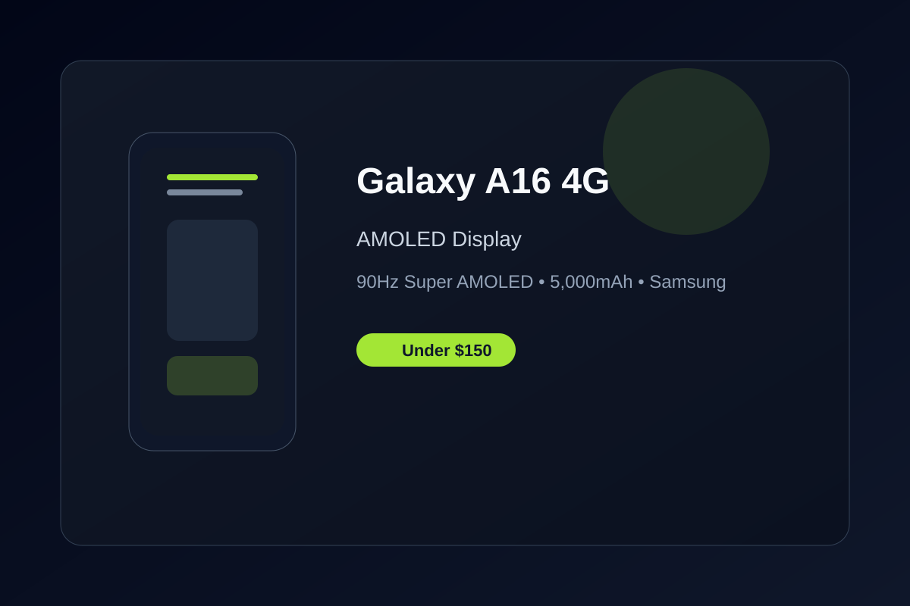

Samsung Galaxy A16 4G Review: Vibrant AMOLED Display Under $150
The Galaxy A16 4G delivers a bright Super AMOLED screen, dependable battery life, and the familiar Samsung experience at a budget-friendly price.
The Samsung Galaxy A16 4G stands out in the under-$150 category with its 6.7-inch Super AMOLED display running at 90Hz. Colors are rich and viewing angles are excellent, making streaming and browsing more enjoyable than on typical budget LCD panels. For users who prioritize screen quality, this is one of the better options available right now.
Battery life is another strong point. The 5,000mAh cell easily handles a full day of mixed use, and the efficient chipset keeps performance steady for everyday tasks like messaging, social media, and light multitasking. Fast enough charging keeps you topped up without long waits.
Samsung’s software experience remains a major advantage. You get a clean, polished interface with useful features, plus the promise of several years of security updates. That longevity makes the A16 a smarter long-term choice compared to many no-name budget phones that stop receiving support quickly.
The camera system is competent for the price, with a 50MP main sensor that handles daylight shots well. Night performance is limited, as expected at this tier, but for social media and casual photography it gets the job done. Dual SIM support and expandable storage add practical flexibility.
Overall, the Galaxy A16 4G is a reliable daily driver for anyone who wants Samsung branding, a nice display, and solid battery life without spending more than $150. It’s not a flagship, but it delivers the essentials with fewer compromises than most alternatives in this range.
Key Takeaways
- Price Range: ~$130 – $140 (Amazon Unlocked)
- Display: 6.7-inch Super AMOLED 90Hz with vibrant colors
- Battery: 5,000mAh for reliable all-day use
- Software: Samsung experience with multi-year updates